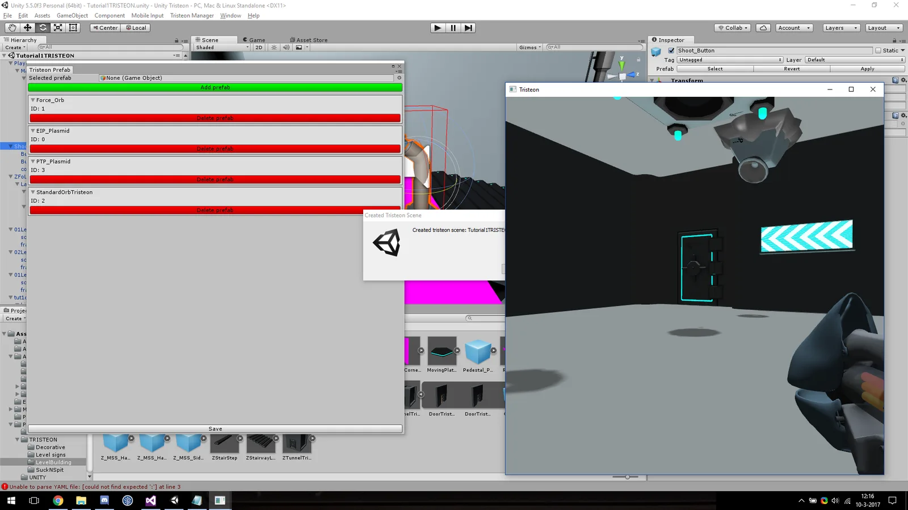

使い慣れたエンジンのようなエディター
Tristeon 3Dは学生2人が5か月で作りました。私はImGuiでエディター全体を書きました。トランスフォームギズモ付きのシーンビュー、ヒエラルキー、あらゆるコンポーネントを編集できるインスペクター、アセットブラウザーです。
アセットブラウザーはプロジェクトフォルダーを走査し、インポート設定を保持するメタデータファイルをアセットごとに生成します。そのためアセットの名前変更や移動をしても参照が壊れません。エディターはエンジンやゲームのコードとは別の層にあり、ゲームはエディターなしで出荷できます。
リフレクションとシリアライズ
C++にはリフレクションがないため、自分たちで作りました。シリアライズ可能な型はすべて、mainの実行前に静的マップへファクトリーを登録します。シーンとプレハブは各オブジェクトの型名とともにJSONで保存され、デシリアライザーはその名前からどんなコンポーネントでも復元できます。エンジンが知らない、ゲーム側で書かれた型でもです。
同じイントロスペクションがインスペクターも動かしており、専用のUIを書かずにあらゆるコンポーネントを表示・編集できます。
template <typename T>
struct DerivedRegister : TypeRegister
{
DerivedRegister()
{
getMap()->emplace(TRISTEON_TYPENAME(T),
&CreateInstance<T>);
}
};
static std::unique_ptr<IntrospectionInterface>
createInstance(const std::string& s)
{
const auto it = getMap()->find(s);
if (it == getMap()->end()) return nullptr;
return it->second();
}
// In a component's header:
REGISTER_TYPE_H(MeshRenderer)原点
Tristeonは、同じ年にパズルゲームOrbのために作った最初のエンジンから生まれました。そこで私は物理を書き、Unityをレベルエディターにしました。Tristeonは自前の本格的なエディターへの一歩でした。
エンジンのスクリプト言語選びは、別の研究C# vs. Wrenにつながりました。

レンダリングを担当したLeon Brandsと共同開発。